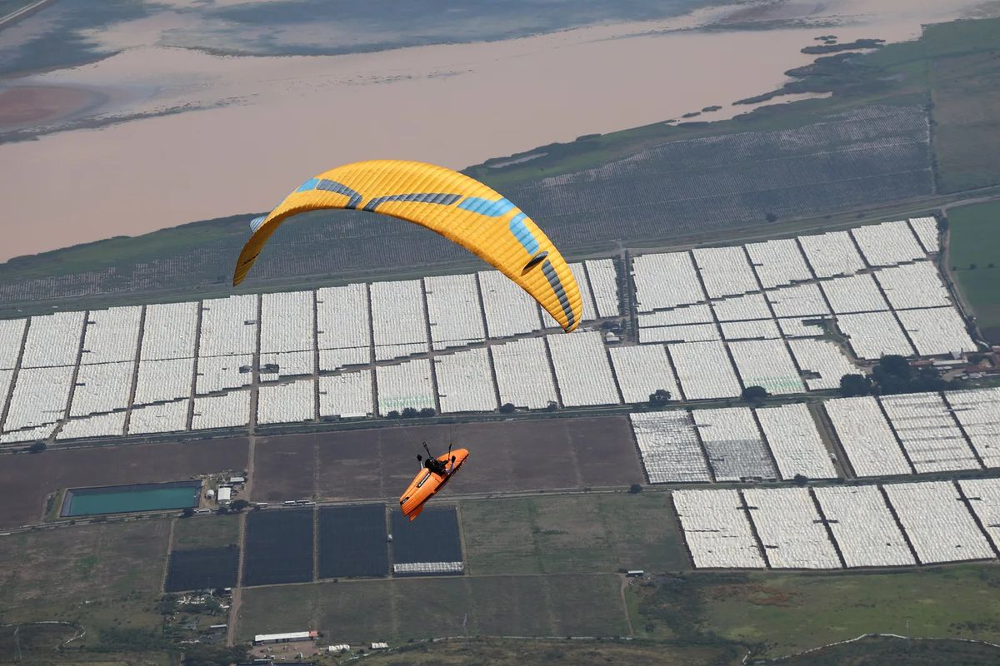

| |
|
Letter 01 · [to supply: send date] |
|
|

|
| Task 1, Tapalpa, Mexico. Photo: Aninder Singh. |
Tapalpa, four tasks in.
Hey fellow pilot,
This is the first letter from the Atlas list. This week I am on the media team at the SRS Advance Edition in Tapalpa, Mexico: photos every evening, a highlights film for each task.
Four tasks are flown and three to go. Here is the week so far, in one page.
Aninder
|
|
SRS Advance Edition · 8 to 14 Nov 2026
The week so far
T1
59.1 |
T2
41.3 |
T3
58.7 |
T4
82.4 |
T5
12 Nov |
T6
13 Nov |
T7
14 Nov |
Task distances in km. Results are provisional, from SRS scoring on 12 Nov.
|
|
|
|
Overall after four tasks
| 1 | Andrés Tello Alvarado MEX | 3137.6 |
| 2 | Bill Belcourt USA | 2953.5 |
| 3 | Chaeden Luebberke USA | 2897.0 |
| W | Lynsey Haynes CAN, first woman | 2754.1 |
Bill Belcourt was on the podcast in October 2025: the safety paradox →
Full results on Airtribune
|
|
465 photos from four tasks, by task, free to save.
|
|
Listen · 53 min
Miguel Gutiérrez on flying Tapalpa
Recorded during the comp: how the site works, explained by [to supply: who Miguel Gutiérrez is, in one line].
Watch or listen on YouTube →
|
|
|
|
|
Like what you see?
The films, the photos and the podcast are free. Patreon is how they keep coming.
|
|
|
Touch The Sky With Glory
You get this because you joined the Atlas list at paraglidingatlas.com. Questions: aninder@paraglidingatlas.com.
Unsubscribe · [to supply: postal address]
|